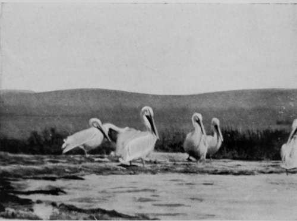
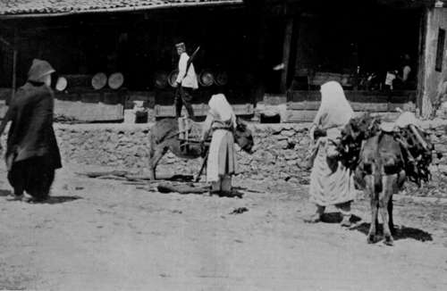
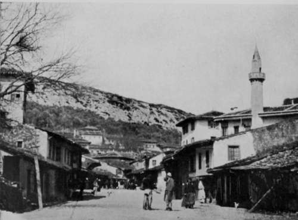

The Quest Of The Pelican : Montenegro. Part 2
Description
This section is from the book "Bird-Hunting Through Wild Europe", by R. B. Lodge. Also available from Amazon: Bird-Hunting Through Wild Europe.
The Quest Of The Pelican : Montenegro. Part 2
Pelicans Swimming
Pelicans (Pelecamjs Crispus)
However, we had to go, there was no help for it; and after seeing the Pelicans of which I was in search, further pursuit of them had to be abandoned, at all events in this particular locality, and we returned the next day to the town.
My quarters in the little inn proved to be very comfortable, and the cooking, though plain and simple, was good. The mutton from the small sheep of the country, fed on the salt marshes near the sea, was excellent, and the wine good and cheap. It being Lent, my men absolutely refused to touch meat or wine, and ate only bread and vegetables enough to keep themselves alive. The religion here is that of the Greek Church, and fasting is rigorously carried out. The consequence is that towards the end of Lent the men are quite unfit for a good day's work.
Street Scene, Dulcigno
On Easter Day they make calls on all their friends and acquaintances, stopping a few minutes to drink a glass of wine, and to take away one or two Easter eggs, dyed red, in the pocket. With these eggs they play a game resembling that engaged in by English boys with chestnuts, tapping one egg against the other until the weaker one is cracked ; and the same custom is found in Albania, as it is among the boys in Cumberland to-day. I was invited by Djouraschkovitch to his home on purpose to see the proceedings. There was a constant succession of arrivals, each of whom was served with a glass of wine and a plate of hard-boiled eggs stained in colours, mostly red. The wine, as a rule, was only sipped, and the greater part left. A snuffy little priest, however, had evidently done more than sip, or else he had had a larger round of acquaintances to visit, for he was decidedly jovial, as he saluted everybody present with three kisses on the cheek. I tried to get off with one, but there was no escape. I met him again later in the day at another house, but, luckily, he remembered having saluted me before, and contented himself with a handshake, much to my relief.
Dulcigno is, I think, the most, or at all events one of the most, picturesque places I have ever seen. At one end of the small bay, and dominating the harbour, stands the old Venetian castle, or its ruins, one of the many memorials along this Adriatic coast of the long-vanished supremacy of Venice. This is now a curious collection of ruined buildings, and small houses made out of their materials, intersected by narrow, tortuous passages and rocky stairways, and crowned at the highest part by a ruined church. It is a perfect human warren ; even the roofless, windowless cellars sheltering crowds of half-naked people, whose eyes glare at you out of the darkness of their noisome abodes like those of wild and unclean animals, while their muttered curses at the intruder follow him as he stumbles and slips along the rock-hewn paths. Myriads of Jackdaws nest in the crevices of the walls, and also in the rocks.
At the other extremity is the modest villa of the Prince of Montenegro, perched on the top of a low cliff, and surrounded by trees. Between the two is the beach, the road along which forms the chief promenade of the inhabitants, and two or three buildings, which include the Turkish Consulate and the small inn in which I stayed, l' Albergo Athanase. But the principal attraction to me was the bazaar, the main street, where the shops were collected together. On bazaar day, or market day, the people poured in from all the country round until the narrow street was packed full of men and women in the most extraordinary variety of costumes I had ever seen. It was just like stepping backward into the Middle Ages, only instead of carrying sword and spear the men are armed with huge revolvers and rifles. One man had in his waistcloth a very handsome silver-handled sword. I was told it had been presented by the Russian Government for having cut off a Turk's head in the late war. He had evidently lost an eye over the job, but looked immensely proud of himself.
Melitza- A Montenegrin Girl
Dulcigno
The Montenegrin costume is handsome enough, but the Albanians are more picturesque and fantastic in their attire. It would be a great chance for a figure artist in search of new subjects to come and stop here for two or three or six months. He would get abundance of new material in the way of costume, colour, and a type of humanity quite fresh to the picture galleries overcrowded with Italian and Egyptian subjects.
Albanian mountaineers, with black jackets tufted heavily with black worsted, their national white fez with headcloth, and thick, white felt trousers cut tight, with fantastic stripes of broad, black braid down the outside and inside of each leg ; venerable Turks, Bosniacs, negroes, Turkish women in shapeless camel-hair cloaks with enormous hoods, their faces entirely covered with semi-transparent veils, hideously striped with grotesque daubs of black and yellow ; and rough, shaggy ponies loaded with firewood,-all jostle one another in the narrow street, and collect in crowds round the open shops, where the various artisans ply their handicraft, squatting cross-legged on the floor.
Here there is a blind minstrel surrounded by a listening crowd as he plays on the guzla, or one-stringed guitar, and sings ballads about the brave deeds of his countrymen against the hated Turk. It is a melancholious and monotonous instrument, somewhat akin to the African tom-tom, but the subject of his verses fills with enthusiasm the hearts of his hearers, and the coins collect in his cap placed beside him on the ground.
Continue to:
- prev: IV. The Quest Of The Pelican : Montenegro
- Table of Contents
- next: The Quest Of The Pelican : Montenegro. Part 3